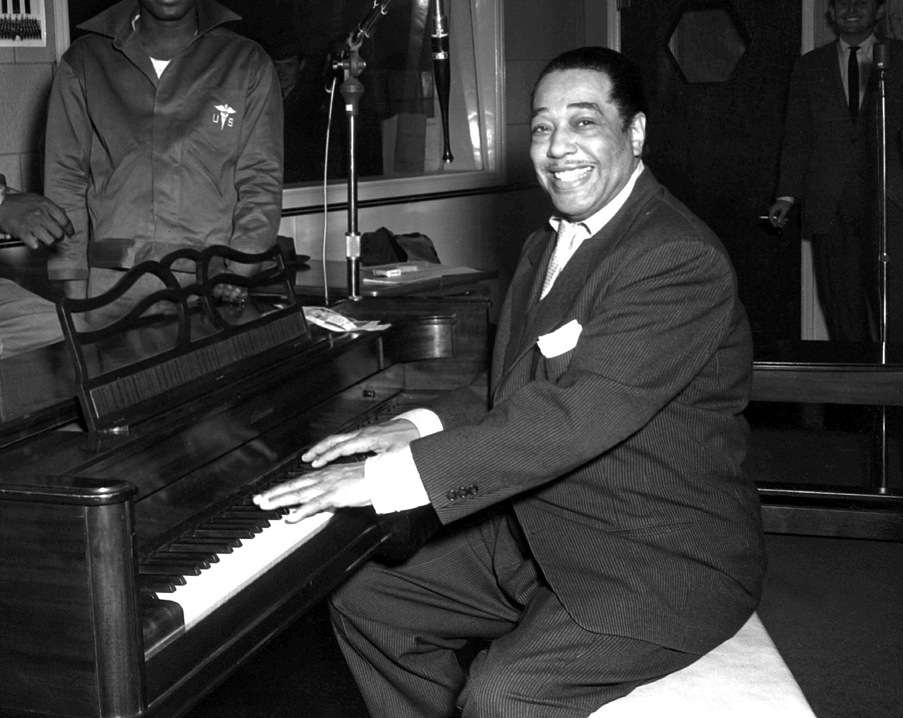

Jazz is a genre of music that originated in the late 19th and early 20th centuries in the
African
American communities of the United States. It encompasses a wide range of musical styles characterized
by improvisation, syncopated rhythms, and a combination of influences from West African music, European
classical music, and American popular music.
At its core, jazz is characterized by its emphasis on individual expression and creativity.
Improvisation plays a central role, allowing musicians to spontaneously create melodies, harmonies, and
rhythms within the framework of a song or a musical piece. This improvisational element sets jazz apart
from other genres of music.
Jazz often features complex harmonies and chord progressions, and it frequently incorporates elements
such as blues, swing, ragtime, and Latin rhythms. It is known for its rich and diverse instrumentation,
including brass instruments (trumpets, trombones, saxophones), woodwinds (clarinets, flutes), piano,
double bass, drums, and guitar.
Over the years, jazz has evolved and branched out into various subgenres, including bebop, cool jazz,
modal jazz, free jazz, fusion, and many others. It has also influenced and been influenced by other
genres of music, such as rock, funk, and hip-hop.
Jazz is not only a musical genre but also a cultural and social phenomenon. It has played a significant
role in shaping American popular music and has been a vehicle for social and political expression. Jazz
has a rich history and has produced numerous legendary musicians who have made lasting contributions to
the art form.
Roots in African and African American Music: The roots of jazz can be traced back to the musical
traditions of West Africa, where rhythmic complexity, improvisation, and call-and-response singing were
prominent. These musical elements were brought to the United States through the transatlantic slave
trade and merged with the musical traditions of African Americans.
Birth of Jazz in New Orleans: In the late 19th century, New Orleans became a melting pot of musical
influences, including African rhythms, European classical music, Caribbean music, and African American
folk music. Out of this rich cultural mix, a new form of music began to emerge, later known as jazz.
Ragtime and Early Jazz: Ragtime, characterized by its syncopated rhythms and lively piano melodies,
played a significant role in the development of early jazz. Musicians like Scott Joplin popularized
ragtime compositions, which heavily influenced the improvisational nature of jazz.
The Influence of Brass Bands: Brass bands were also influential in the development of jazz. These bands,
consisting of brass instruments and percussion, performed at various social events and funerals. They
played a crucial role in popularizing improvisation and ensemble playing.
The Jazz Age and the Roaring Twenties: The 1920s marked a period of great popularity and innovation for
jazz. This era, known as the Jazz Age or the Roaring Twenties, saw the rise of jazz as the dominant
popular music of the time. Jazz spread beyond New Orleans and gained popularity in cities like Chicago
and New York.
The Swing Era: In the 1930s and 1940s, jazz entered the Swing Era. Big bands led by influential
musicians such as Duke Ellington, Count Basie, and Benny Goodman became popular. Swing music featured
intricate arrangements and encouraged dancing, attracting a broad audience.

Bebop and Modern Jazz: In the 1940s, a new form of jazz called bebop emerged as a reaction against the
commercialization of swing. Bebop emphasized improvisation, complex harmonies, and fast tempos.
Musicians like Charlie Parker, Dizzy Gillespie, and Thelonious Monk pushed the boundaries of jazz with
their virtuosic playing.
Cool Jazz and Modal Jazz: In the 1950s and 1960s, jazz continued to evolve with the advent of cool jazz
and modal jazz. Cool jazz, pioneered by musicians like Miles Davis, had a more relaxed and subdued
sound. Modal jazz, popularized by John Coltrane, explored improvisation based on musical modes rather
than traditional chord progressions.
Free Jazz and Fusion: The 1960s and 1970s saw the emergence of free jazz, which pushed the boundaries of
improvisation and structure even further. Musicians like Ornette Coleman and Cecil Taylor embraced
unconventional approaches to melody and harmony. Additionally, fusion jazz blended elements of jazz with
rock, funk, and other genres, incorporating electric instruments and synthesizers.
Contemporary Jazz: In recent decades, jazz has continued to evolve and diversify. Various subgenres and
styles have emerged, incorporating influences from world music, hip-hop, electronic music, and more.
Contemporary jazz musicians continue to push boundaries, experiment with new sounds, and honor the rich
tradition of jazz while embracing innovation.
"Take Five" by Dave Brubeck: Released in 1959, "Take Five" is one of the most recognizable and beloved
jazz compositions. It was written by saxophonist Paul Desmond and performed by the Dave Brubeck Quartet.
The song's distinctive 5/4 time signature, memorable melody, and captivating improvisations have made it
a timeless classic.
 "Summertime" by George Gershwin: Originally composed for the opera "Porgy and Bess" in 1935,
"Summertime" has become a jazz standard, with countless interpretations by various artists. The song's
soulful melody and melancholic lyrics evoke a sense of longing and beauty. Notable jazz renditions
include those by Ella Fitzgerald and Louis Armstrong.
"Kind of Blue" by Miles Davis: Considered one of the greatest jazz albums of all time, "Kind of Blue"
(1959) showcases the genius of trumpeter Miles Davis. The album, characterized by its modal jazz
approach and delicate improvisations, features legendary musicians such as John Coltrane and Bill Evans.
Tracks like "So What" and "All Blues" have become iconic in the jazz canon.
"Fly Me to the Moon" by Frank Sinatra: Although not originally a jazz song, Frank Sinatra's rendition of
"Fly Me to the Moon" has become synonymous with jazz. Released in 1964, Sinatra's smooth vocals combined
with the lush arrangements and swinging rhythms have made it a beloved jazz standard.
"Strange Fruit" by Billie Holiday: "Strange Fruit" (1939) is a powerful and haunting song that addresses
racism and the horrors of lynching in the United States. Billie Holiday's poignant interpretation,
accompanied by minimal instrumentation, creates a chilling atmosphere that resonates with listeners to
this day.
"A Love Supreme" by John Coltrane: Released in 1965, "A Love Supreme" is a seminal album by saxophonist
John Coltrane. It is regarded as a masterpiece of avant-garde jazz and spiritual exploration. The
album's title track, with its passionate and transcendent improvisations, showcases Coltrane's
exceptional talent and his quest for musical and personal enlightenment.
"Summertime" by George Gershwin: Originally composed for the opera "Porgy and Bess" in 1935,
"Summertime" has become a jazz standard, with countless interpretations by various artists. The song's
soulful melody and melancholic lyrics evoke a sense of longing and beauty. Notable jazz renditions
include those by Ella Fitzgerald and Louis Armstrong.
"Kind of Blue" by Miles Davis: Considered one of the greatest jazz albums of all time, "Kind of Blue"
(1959) showcases the genius of trumpeter Miles Davis. The album, characterized by its modal jazz
approach and delicate improvisations, features legendary musicians such as John Coltrane and Bill Evans.
Tracks like "So What" and "All Blues" have become iconic in the jazz canon.
"Fly Me to the Moon" by Frank Sinatra: Although not originally a jazz song, Frank Sinatra's rendition of
"Fly Me to the Moon" has become synonymous with jazz. Released in 1964, Sinatra's smooth vocals combined
with the lush arrangements and swinging rhythms have made it a beloved jazz standard.
"Strange Fruit" by Billie Holiday: "Strange Fruit" (1939) is a powerful and haunting song that addresses
racism and the horrors of lynching in the United States. Billie Holiday's poignant interpretation,
accompanied by minimal instrumentation, creates a chilling atmosphere that resonates with listeners to
this day.
"A Love Supreme" by John Coltrane: Released in 1965, "A Love Supreme" is a seminal album by saxophonist
John Coltrane. It is regarded as a masterpiece of avant-garde jazz and spiritual exploration. The
album's title track, with its passionate and transcendent improvisations, showcases Coltrane's
exceptional talent and his quest for musical and personal enlightenment.
"Misty" by Erroll Garner: Composed by Erroll Garner in 1954, "Misty" has become a jazz standard,
celebrated for its romantic and lyrical qualities. The song's memorable melody, lush harmonies, and
Garner's distinctive piano playing have made it a favorite among jazz musicians and audiences alike.
"All That Jazz" from "Chicago": Written by John Kander and Fred Ebb, "All That Jazz" is the opening
number from the Broadway musical "Chicago." With its energetic rhythms, catchy melody, and sassy lyrics,
the song epitomizes the spirit and glamour of jazz. It has since become an iconic show tune and has been
recorded by various artists.
"Cantaloupe Island" by Herbie Hancock: Released in 1964, "Cantaloupe Island" is a funky and infectious
jazz composition by pianist Herbie Hancock. The song's memorable piano riff, groovy bassline, and catchy
melody have made it a popular choice for jazz musicians to perform and reinterpret.
"In a Sentimental Mood" by Duke Ellington: Composed by Duke Ellington in 1935, "In a Sentimental Mood"
is a beautiful and romantic jazz ballad. Ellington's elegant piano playing, combined with the tender
saxophone melodies, creates a timeless and evocative atmosphere that captures the essence of sentimental
longing. For more information about Jazz you can click this LINK which will take you to
the wikipedia page for the topic of Jazz.